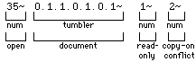
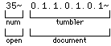
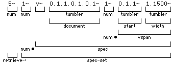
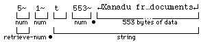

|
FeBe Example |
This chapter is presented in the spirit of the "hello world" example from the Kernighan and Ritchie "C" book [K&R 78]. It is being presented early, before the background necessary to properly understand it, so that those who prefer some concreteness upon which to hang abstract concepts can feel oriented. Those who prefer to first read about concepts and definitions should skip this chapter now and return to it later. This chapter refers to many later chapters; the reader should not expect to understand these until the Technical Overview has been read.
Fixed pitch font in this chapter was generated by capturing the messages exchanged between a frontend and a backend in an actual Udanax Green session. Each message from the frontend is preceded by a comment line beginning with "fe:", and each response from the backend by a line beginning with "be:".
The session consisted of:
* the frontend starting, displaying a particular start document (referred to as Document A in the rest of this chapter),
* the user following a link from Document A to the document at the other end of that link (Document B), and
* the user quitting.
fe: Do you speak the prototype protocol?
P0~
P0~
Because the frontend wished to speak the prototype protocol, it indicated this by sending some new-lines (at least one), followed by `P0~'. The prototype backend ignored all input until it got a new-line, and consumed as many new-lines as were there. Since it then found `P0~', it responded with a new-line followed by a `P0~'. If the prototype backend received anything other than `P0~' from the frontend, it would have returned new-line `P?~' and considered the session terminated. (If a future backend does not speak the prototype protocol, it will return something else and consider the session terminated. There is no reason to expect that any future frontend or backend will support the prototype protocol, but future products will support the above protocol for negotiating about what protocol they are speaking.) (See the section about metaprotocol in the man-pages "backend(L)" and "daemon(L)" in Appendix C.)
Having agreed that they were both speaking the prototype protocol, the frontend proceeded to open Document A:
fe: Can I have read-access to doc-A or a copy?
In the FeBe Protocol, tilde (~)
and new-line (¯) are terminators, and
are used
to terminate each of the input and output arguments. (See the
section
"Lexical Definitions" in Appendix A.) Requests from
the frontend
always begin with a request number, followed by the arguments
for that
request. If the backend successfully responds (as above), the
response
consists of that same request number followed by result
arguments.
Translated into the terminology of the syntax definition
chapters (see
the chapter "FeBe
Protocol" and
Appendix A: "FeBe Protocol
Syntax"),
the frontend said:

The backend responded with:

Note that we used the brackets () when speaking in the
metasyntax as
defined in Appendix A: "FeBe Protocol Syntax".
The frontend requested that the document with address 1.1.0.1.0.1 (Document
A) be opened for reading. Addresses in Udanax Green consist of multi-part
numbers which we call "tumblers". (See "Addressing" and "Tumbler
Arithmetic".) Address 1.1.0.1.0.1 is a document id simply
known to this frontend as a good starting point (much as a home directory
under Unix). Because many tumblers sent in the protocol may have some
number of leading zeros, the protocol uses a compressed format in which
the first digit denotes the number of leading zeros to be appended to
the rest of the digits to form the actual tumbler. For example, a `3.4.5' in the protocol would represent tumbler 0.0.0.4.5
(see the section "Lexical Definitions" in Appendix
A).
The copy-on-conflict argument
indicated to
the backend that should it not be able to open Document A for
this frontend
(because, for example, someone else had it open for writing),
then the
backend should instead create a new version (a virtual copy),
and open
it. If the backend had made and opened a copy, it would have
returned
the id of the copy. Since, in the example, the backend
returned
the original id, the open succeeded on the requested
document.
(See the chapter "Versions".)
As seen below, the frontend next requested the first 1,500
characters
of this document. It did so with a request of the form:

where vspan represented the part of
the document
starting at 1.1 extending for 0.1500. This indicated the
interval from
1.1 inclusive to (1.1 + 0.1500) exclusive. As 1.1 + 0.1500 =
1.1501, the
interval included all characters from location 1.1 up to but not
including
1.1501, or, the first 1,500 characters in the document's data
space. (See
"Tumbler Arithmetic".)
The backend responded with:

Since there were only 553 characters in the data space of the
document,
only these were returned.
Note that the text of Document A (which follows) is a description of the
Udanax Green Prototype Frontend commands. Also, the (¯) immediately following `t553~' is in fact the first character of the retrieved
document.
fe: What's in doc-A starting at 1.1 for 0.1500?
Xanadu Front-End Commands¯
¯
These are the commands that currently work.¯
¯
¯
CURSOR CONTROL¯
¯
¯
^W or uparrow move up a line¯
^Z or downarrow move down a line¯
^A or leftarrow move back a character¯
^S or rightarrow move forward a character¯
¯
^R top of document¯
^F down one page¯
¯
¯
LINK HANDLING¯
¯
^Y follow link¯
¯
Link starting points are back-lit.¯
Link destinations are underlined.¯
¯
^U return from following link.¯
¯
¯
CONTROL¯
¯
^T exit program¯
¯
¯
¯
¯
Follow this link to get to the index of documents¯
fe: What are all the end-sets in the data space of doc-A?
be: One from-set in doc-A starting at 1.504 for 0.49, one to-set starting at 1.2 for 0.6, no three-set
28~1~v~0.1.1.0.1.0.1~1~0.1.504~1.49~1~v~0.1.1.0.1.0.1~1~0.1.2~1.6~0~< /font>
To see if there was any more data in Document A to be retrieved, the frontend sent the request:
fe: How big are the spaces in doc-A?
Back to our example: the user of the frontend had just moved to character 513 and hit the follow-link button. Character 513 was within the from-set of some link (as was known from the above retrieve-endsets request). The frontend needed to follow that link, so it had to determine what link or links contained that character as an end-set. It did this with the request: , where spec-setfrom was: , or, the single character at location 513 in the document. The other spec-sets were empty, which indicated no match-restrictions there.
fe: What are all the links from position 513 of doc-A
Since only one link was involved, the frontend decided to follow that link. The frontend first inquired about the three-set of the link by sending:
fe: What is the three-end of the link attached to?
Then the frontend inquired about the to-end of the same link:
fe: What is the to-end of the link attached to?
First we opened it:
fe: Can I have read-access to doc-B or a copy?
fe: What are in the first 1500 locations of doc-B?
¯
Documents :¯
¯
the intro¯
¯
this index¯
¯
the brochure for this demonstration¯
¯
a description of the Xanadu System for DBMS devotees¯
¯
a pretty-picture program:¯
¯
source code¯
¯
documentation¯
¯
output¯
¯
a some correspendence¯
¯
letter¯
¯
memo1¯
¯
memo2¯
¯
reply¯
¯
¯
propoganda¯
¯
xudescroff¯
¯
overview¯
¯
outln¯
¯
feidoc¯
¯
glossary¯
¯
addresses¯
¯
formats.bnf¯
¯
xuinfo.bnf¯
¯
requestlist¯
¯
spanstuff¯
¯
tumblers¯
¯
Computer Lib/Dream Machines¯
¯
Business plan:¯
Bizplan1¯
Bizplan2¯
Bizplan3¯
Bizplan4¯
Bizplan5¯
Bizplan6¯
Bizplan7¯
Bizplan8¯
fe: What are all the end-sets in the data space of doc-B?
spec-setfrom is: `1~' * [`v~' iddoc-B `31~'* [vspan]]
spec-setto is: `1~' * [`v~' iddoc-B `6~'* [vspan]]
spec-setthree is: `1~' * [`v~' iddoc-B `5~'* [vspan]]
This response informed the frontend of the thirty-one spans in Document B which were in the from-space of some link, the six spans which were in the to-space of some link, and the five spans which were in the three-space of some link. For example, the from-span starting at 1.75 for 0.9 denoted that the text `the intro' was in the from-space of (at least) one link, and therefore that the user could follow it to more material.
Finally, the user told the frontend to quit; the frontend in turn asked the backend to quit; the backend informed the frontend that it had quit; and the session was terminated.
fe: I'm ready to quit, how about you?